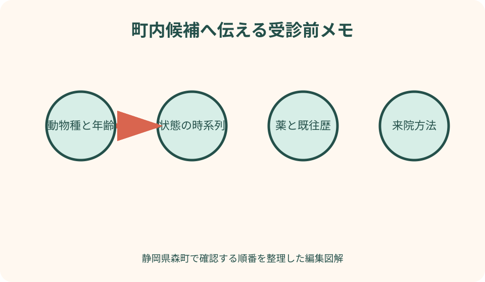
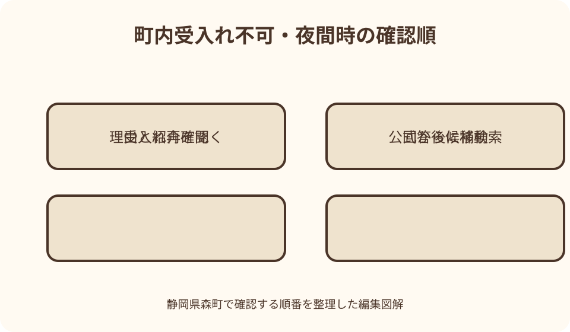

森町生活・ペット｜最終確認 2026-08-10
静岡県森町の動物病院・犬猫の受診先確認｜予約から夜間の連絡順まで
静岡県森町で犬や猫の受診先を探す時は、検索結果の評価順ではなく、診療対象、予約、現在の受入れ、移動手段を電話で確認します。町内には森のどうぶつ病院の当事者公式があり、犬、猫などの対象と予約優先の案内を確認できますが、掲載内容だけで当日の診療や夜間対応が保証されるわけではありません。まず町内候補へ連絡し、難しい場合は静岡県獣医師会や周辺市の病院公式から次の候補を探します。動物の状態をネット記事で診断せず、夜間はかかりつけの指示と当事者の最新案内を優先します。

編集イラスト最初に動物種と受診希望を電話で伝える
犬猫を診療対象として掲げる病院でも、状態、診療体制、予約状況により当日受入れできない場合があります。来院前に必ず連絡します。
電話では犬か猫か、品種、年齢、性別、避妊去勢、体重、初診・再診を伝えます。病名を推測するより、観察した事実を短く話します。
予防、定期診療、急な体調変化、けが、処方薬の相談など、希望する用件を分けます。同じ受付方法や準備になるとは限りません。
本記事は獣医師の診断や治療を代替しません。2026年8月10日に確認した町、病院、獣医師会の公式情報から確認手順を整理しています。
町内候補は森のどうぶつ病院の当事者公式を読む
森のどうぶつ病院は森町一宮にあり、公式サイトで犬、猫、うさぎ、大動物などの診療対象と予約優先を案内しています。
二つの公式ドメインに案内があるため、住所、電話、診療時間、休診、新着情報を照合します。内容が違う時は電話回答を優先します。
犬猫以外の動物や大動物は、種類を具体的に伝えます。対象一覧に近い名称があっても、個体や用件を診られると決めつけません。
町内候補が一つ見つかったことを、いつでも受診できる意味にしません。休診、手術、往診、予約で体制が変わるため、出発前に確認します。
診療時間・休診・予約優先を別々に確認する
公式の診療時間表は通常予定です。祝日、お盆、年末年始、臨時休診、獣医師の不在を反映する最新のお知らせも読みます。
予約優先は、電話すれば希望時刻に必ず診てもらえる意味ではありません。空き、待機方法、到着期限、遅刻時の扱いを聞きます。
急患という言葉の扱いも病院が判断します。飼い主が『急患です』と伝えるだけで時間外診療が確約されるとは考えません。
予定変更やキャンセル時は病院へ連絡します。複数病院へ同時予約を入れ、受診しない枠を放置しません。
電話用メモは状態の変化を時系列で作る
いつ普段どおりだったか、いつ何が変わったか、その後どう変化したかを時刻順に書きます。曖昧な『元気がない』だけで終えません。
食事、水、嘔吐、便、尿、呼吸、歩行、反応、出血など、見た事実を記録します。ただし数値や症状から自分で診断名を付けません。
誤食の可能性があれば、商品、量、時刻、包装、残りを分かる範囲で保管します。自己判断で吐かせたり飲食させたりせず、病院へ指示を聞きます。
けがでは発生場所、原因、相手動物、人への接触を伝えます。安全を確保し、痛がる場所を何度も触って確認しません。
持参物は個体情報・医療歴・状態資料に分ける
個体情報は診察券、ワクチン証明、犬の登録情報、マイクロチップ情報、ペット保険証などです。必要物と保険利用条件は病院へ確認します。
医療歴は過去の病名、手術、検査、アレルギー、現在の薬とサプリ、かかりつけ先です。薬袋や容器を識別できる状態で持ちます。
状態資料は時系列メモ、誤食物の包装、便や尿等について病院から指示されたものです。無断で不衛生な物を受付へ持ち込まず、電話で方法を尋ねます。
動画や写真が役立つかは病院へ聞きます。撮影のために発作や異常行動を長く見守り、連絡を遅らせることは避けます。
犬はリード・猫はキャリーを基本に病院へ聞く
犬は首輪やハーネスとリード、猫は安全に閉じられるキャリーを用意します。普段おとなしいことを院内で自由に歩かせる理由にしません。
大型犬、逃走しやすい犬、攻撃や恐怖反応がある場合は予約時に伝えます。口輪等を自己判断で装着せず、病院から来院方法を聞きます。
猫のキャリーには吸水できる敷物を入れ、扉と留め具を確認します。洗濯ネット等の利用は個体により異なるため、病院へ相談します。
犬猫を同時に連れて行く場合、待機場所と大人の人数を確認します。一頭を駐車場や車内へ長時間残す計画にはしません。
待合では他の動物との距離を病院の指示で取る
病院到着後は受付方法を確認し、車内待機や別入口を案内されたら従います。感染、興奮、逃走を飼い主の判断だけで防げるとは考えません。
リードを短く持ち、伸縮リードを通路いっぱいに伸ばしません。猫のキャリーを床の出入口や犬の鼻先へ置かないようにします。
咳、下痢、皮膚症状など他の動物へ影響し得る状態は、入室前に電話で伝えます。通常待合へ直接入らない場合があります。
子ども連れは、他の動物へ触らない、走らない、大声を出さないよう大人が見守ります。診察補助と子どもの見守りを一人で担えない時は同行者を頼みます。

費用・検査・入院は説明を受けて同意する
動物診療の費用は状態、検査、処置、薬、時間外などで変わります。ウェブ上の過去料金や口コミを当日の請求保証に使いません。
受付時に初診料、概算、支払方法、ペット保険の窓口精算を確認します。保険証を持てば必ず適用されるとは限りません。
検査や治療の目的、選択肢、費用、リスク、見通しは獣医師から説明を受けます。本記事から必要な検査を指定したり断ったりしません。
入院や手術の提案では、面会、連絡、預かり品、支払、転院の条件を確認します。その場で分からない用語を質問します。
薬・食事・家庭での管理は獣医師の指示を記録する
処方薬の名前、量、回数、期間、保管、飲ませ方、飲み忘れ、異変時の連絡先を書きます。人用や別個体の薬を流用しません。
食事や水を止める、与える判断は状態と検査で異なります。ネット上の一般論ではなく、受診先の具体的な指示に従います。
エリザベスカラー、安静、散歩、ケージ管理なども個体に合わせた説明を聞きます。嫌がるからと独自に外しません。
再診時刻と悪化時の連絡条件を確認します。夜になってから迷わないよう、通常時間外で連絡方法が変わるか尋ねます。
狂犬病予防と体調不良の診察を混同しない
森町公式は犬の登録、狂犬病予防注射、注射済票に関する案内を掲載しています。年度ごとの集合注射や委託病院は当年情報で確認します。
予防注射へ行く前に体調不良がある場合、接種可否を獣医師へ相談します。飼い主が元気に見えると判断して接種を求めません。
森町委託病院での手続きと、委託外病院で接種した後の町手続きは異なる場合があります。町の生活環境係へ最新の持ち物を聞きます。
猫の診療、ワクチン、不妊去勢、マイクロチップなどは狂犬病手続きと別です。病院と町のどちらへ確認する用件か分けます。
町内で受けられない時は周辺市を距離だけで選ばない
町内候補が休診、満員、対象外の場合、紹介可能な周辺病院があるか尋ねます。紹介名が出ても、次の病院へ受入れを再確認します。
袋井、掛川、磐田などの候補は、静岡県獣医師会や病院公式から探します。口コミ点数や広告順位を診療の質の証明にしません。
動物種、状態、必要設備、現在時刻、到着見込みを伝えます。一般診療中でも、該当する検査や入院へ対応できないことがあります。
遠い専門施設を自己判断で選ぶ前に、かかりつけや受入れ先へ相談します。紹介状、検査画像、診療記録の受渡し方法を確認します。
車移動はキャリー固定・温度・同乗者を整える
猫のキャリーや小型犬のケースは、急ブレーキで動かない位置へ固定します。大型犬も運転席へ来ない方法を用意します。
夏や冬の車内温度を管理し、待機を案内された時も動物だけを残しません。空調を付けているから安全と保証されるわけではありません。
吐く、排せつする可能性に備え、吸水シート、タオル、交換袋を用意します。ただし清掃より状態変化の連絡を優先します。
飼い主一人で運転と観察を同時に行えないため、可能なら同乗者を頼みます。移動中に悪化したら安全な場所へ停車し、受入れ先へ電話します。
鉄道・バス・タクシーは動物同伴条件を確認する
森町公式の公共交通ページから運行主体へ進み、犬猫をケースに入れて乗れるか、サイズ、料金、混雑時の条件を問い合わせます。
動物病院の最寄り駅表記だけで徒歩移動を決めません。体調不良の動物を運べる距離、坂、暑さ、雨を考えます。
タクシーは動物同伴とキャリーの条件、汚損時の扱い、配車可否を予約時に伝えます。駅前で必ず乗れるとは期待しません。
帰りは診療終了時刻が読めない場合があります。公共交通へ間に合わなければ、家族の迎え、配車、周辺待機を病院へ相談します。
旅行中は宿・観光施設と受診の連絡を分ける
犬猫連れで森町へ泊まる人は、かかりつけの電話、薬、保険情報、ワクチン証明、キャリーを持参します。現地ですべて再発行できるとは限りません。
宿へは動物の状態と外出予定を必要な範囲で伝え、部屋へ残せるかを規則で確認します。無断で長時間置き去りにしません。
観光施設の予約は、受診が必要なら取消しや変更を相談します。キャンセル料を避けるため診療を遅らせる判断はしません。
診療後に旅行を続けられるかは獣医師へ聞きます。飼い主が元気に見えると感じても、移動、散歩、入浴、食事の指示を優先します。
夜間は古い時間外情報を受入れ保証にしない
夜間に状態が変わったら、まずかかりつけから受けた時間外連絡の指示を確認します。通常診療時間の番号が夜も応答するとは限りません。
病院の留守番電話、公式サイト、公式SNSに当日案内があるか見ます。第三者サイトの『夜間対応』表示だけで直接向かいません。
静岡県獣医師会の公式情報から会員病院や関連案内を確認し、候補へ動物種、状態、現在地、到着見込みを電話します。
夜間対応を断られた時は、次に相談できる施設を尋ねます。複数の遠方病院へ向けて出発しながら電話する方法は避けます。
災害時は同行避難と医療情報を平時に準備する
森町地域防災計画と静岡県獣医師会は、災害時の動物同行避難を考える入口です。避難所で人と同じ空間に入れる保証とは分けます。
キャリー、リード、フード、水、薬、排せつ用品、個体情報、写真をまとめます。持病薬の予備は平時に獣医師へ相談します。
災害中は通常の病院受付、道路、電話が使えない場合があります。町、県、獣医師会、病院の公式発表を確認し、未確認の診療所情報を拡散しません。
飼い主の避難を遅らせて動物病院へ向かわず、まず安全を確保します。避難先で動物の状態を担当者へ伝え、利用可能な支援を確認します。

受入れ不可時は四つの質問を残して次へ進む
第一は、今日診られない理由が時間、満員、対象外、設備のどれかを確認することです。責任を追及するためでなく次の検索条件に使います。
第二は、紹介できる病院または探し方があるかです。紹介先の診療を保証する回答ではないため、必ず自分で再連絡します。
第三は、移動までに避けることと状態変化時の再連絡先です。具体的な家庭処置は電話した獣医療者の指示だけに従います。
第四は、診療記録や検査結果の共有方法です。転院時に同じ説明や検査を減らせる可能性がありますが、共有可否と費用を確認します。
受診後は動物と説明書を安全に連れて帰る
会計前に、次の連絡時期、再診の要否、薬や食事について獣医師から受けた指示、状態が変わった時の連絡先を復唱します。内容を自己判断で補いません。
検査結果、処方内容、領収書、紹介状等はキャリーとは別の防水袋へ入れ、帰宅後に撮影して家族と共有します。動物を車内へ残して書類整理を続けません。
帰路は往路より動物の様子や荷物が変わる場合があります。キャリー固定、車内温度、途中停車の可否を確認し、寄り道の観光や買い物は控えます。
別の病院へ続けて連絡する必要がある時は、受診済みの日時、処置・検査の資料、現在の状態を伝えます。最初の病院への不満を説明するより、引継ぎに必要な事実を優先します。
良い点——町内当事者と県獣医師会の入口がある
良い点は、町内病院が診療対象、予約、所在地、連絡先を当事者公式で公開していることです。第三者一覧だけに頼らず確認できます。
静岡県獣医師会の公式サイトは県内の獣医療情報や災害時同行避難を知る入口です。町内で難しい時に公的な業界団体へ戻れます。
森町公式のペット生活ページには、犬の登録、狂犬病、猫の飼育、相談等への導線があります。医療と行政手続きを分けられます。
公共交通の公式入口もあるため、車を使えない飼い主は運行主体へ同伴条件を確認できます。ただし診療時間との接続は個別調整が必要です。
注文したい点——夜間と周辺紹介の統一入口が見つけにくい
注文したい点は、町内病院の通常診療から夜間、対象外、周辺市へ切り替える公式手順を一画面で比較しにくいことです。
診療対象、予約、通常時間、臨時休診、時間外連絡の可否に更新日が付けば、古い第三者情報から直接来院する行き違いを減らせます。
周辺病院検索も距離だけでなく、犬猫、エキゾチック、大動物、検査、入院、夜間の確認項目で絞れる県公式導線が望まれます。
災害時には同行避難、動物医療、飼い主支援の窓口を分けて示す必要があります。本記事は診療先を固定せず確認順で補います。
代案・結論——町内電話から周辺市へ段階的に広げる
最初は町内候補へ動物種、状態、時刻、既往歴、来院方法を伝え、予約、受入れ、持参物、入口を確認します。
難しければ紹介の有無を聞き、県獣医師会や当事者公式から周辺市候補を探して再度電話します。距離と口コミだけで向かいません。
夜間はかかりつけの指示、留守番電話・病院公式、獣医師会情報の順に確認し、受入れ回答を得てから安全に移動します。
結論は、検索で病院名を見つけることより、診られる対象と現在の受入れを確定することです。状態変化は移動先へすぐ伝えます。
大石の視点——平時に一回電話確認の練習をする
私（大石）は、急変してから初めて病院を探すのではなく、平時に犬猫の個体メモ、かかりつけ、休診日の代案を家族で共有します。
移住下見では病院までの距離だけでなく、予約方法、対象動物、車が使えない日、周辺市への経路を確認します。
飼い主が慌てることを責めず、電話で事実を伝えられる準備を重視します。診断名を当てるより、開始時刻と変化を残す方が実用的です。
この記事の確認日は2026年8月10日です。診療対象、予約、休診、夜間、交通は変わるため、受診前に病院と公式情報を確認してください。
移動用バッグには診察券、服薬情報、排泄物を処理する用品、動物を安全に保持する道具を分けて準備します。食事や薬を止めるかどうかは自己判断せず、予約電話で病院から指示された内容だけを時刻と一緒に記録します。
周辺市の病院を案内された場合は、紹介先の名称だけで出発せず、対象動物、現在の受入れ、到着見込み、入口と駐車位置を確認します。移動中に状態が変わったときの連絡先も聞き、運転者とは別の人が電話できる体制を作ります。
公式情報・確認先
掲載内容は次の一次情報を基礎に整理しました。営業、料金、催し、交通は変わるため、出発前または手続き前にリンク先で最新情報を確認してください。
- 環境・住宅・ペット・生活（静岡県森町、2026-08-10確認）
- 森町の公共交通について（静岡県森町、2026-08-10確認）
- 森町地域防災計画（静岡県森町、2026-08-10確認）
- 森のどうぶつ病院（森のどうぶつ病院、2026-08-10確認）
- 森のどうぶつ病院 医院案内（森のどうぶつ病院、2026-08-10確認）
- 公益社団法人静岡県獣医師会（静岡県獣医師会、2026-08-10確認）